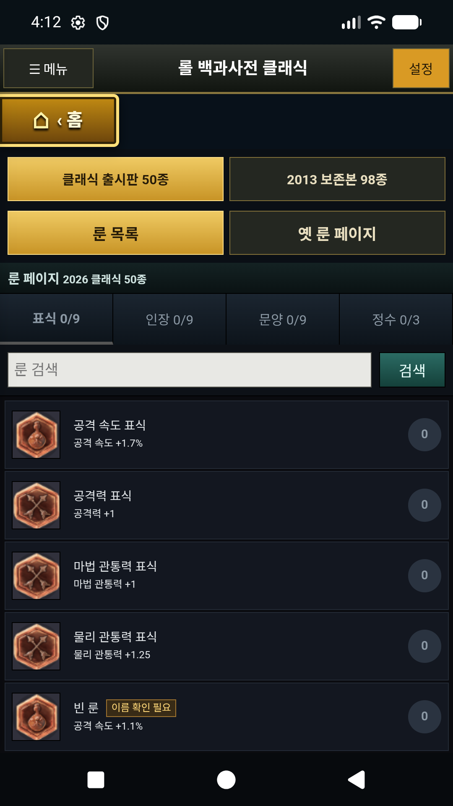
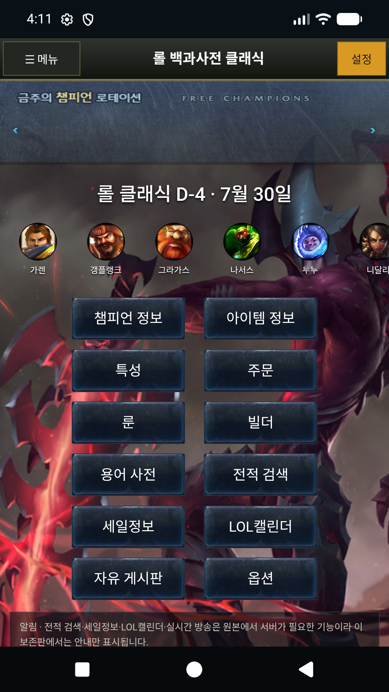
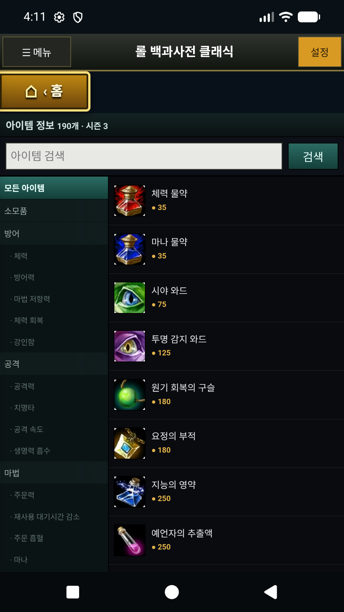
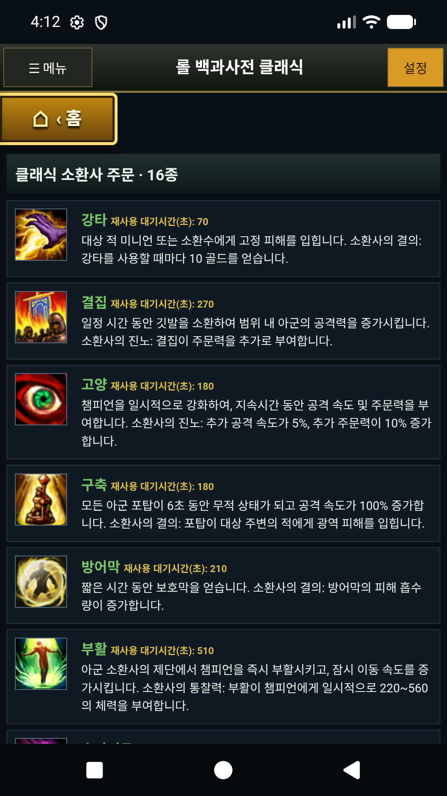

Champion archive
60 Classic launch champions by default, with a 115-champion historical archive and detailed reference pages.
Working Android prototype · Closed testing
LoL Encyclopedia Classic is an independently developed, unofficial Android reference application focused on early-season League of Legends information and League of Legends Classic.
Free · No ads · No in-app purchases · No account required in the current prototype


Available now in the closed-test build
The prototype runs on modern Android devices and separates classic archive material from future live-game data.
60 Classic launch champions by default, with a 115-champion historical archive and detailed reference pages.
190 historical items with categories, recipes, costs, and a two-column layout designed for narrow screens.
56 masteries with ranks, prerequisites, and tree positions, plus 16 Classic summoner spells.
Classic marks, seals, glyphs, and quintessences with a 9/9/9/3 parchment-style rune page builder.
Actual application screens
Captured from an Android debug build. These screens demonstrate the working product flow and are not the final Google Play listing images.


Planned after review and approval
Live account data is not part of the current prototype. It will only be added after the appropriate Riot Developer Portal review.
Roadmap, not current functionality
A shared community board, user accounts, reporting, blocking, moderation, and deletion tools are not currently available. The prototype board stores test content only on the user's device.
Shared community functionality will not launch until its backend, safety controls, user-data procedures, and policies are complete and tested.
한국어 안내
현재 비공개 테스트 중인 작동 가능한 프로토타입으로, 과거 챔피언·아이템·특성·주문·룬 자료를 현대 Android 환경에서 살펴볼 수 있습니다. Riot API를 이용한 실시간 계정 정보와 공용 커뮤니티 기능은 아직 제공하지 않으며, 관련 심사와 안전 기능 준비가 끝난 뒤에만 추가할 예정입니다.
Product and policy review